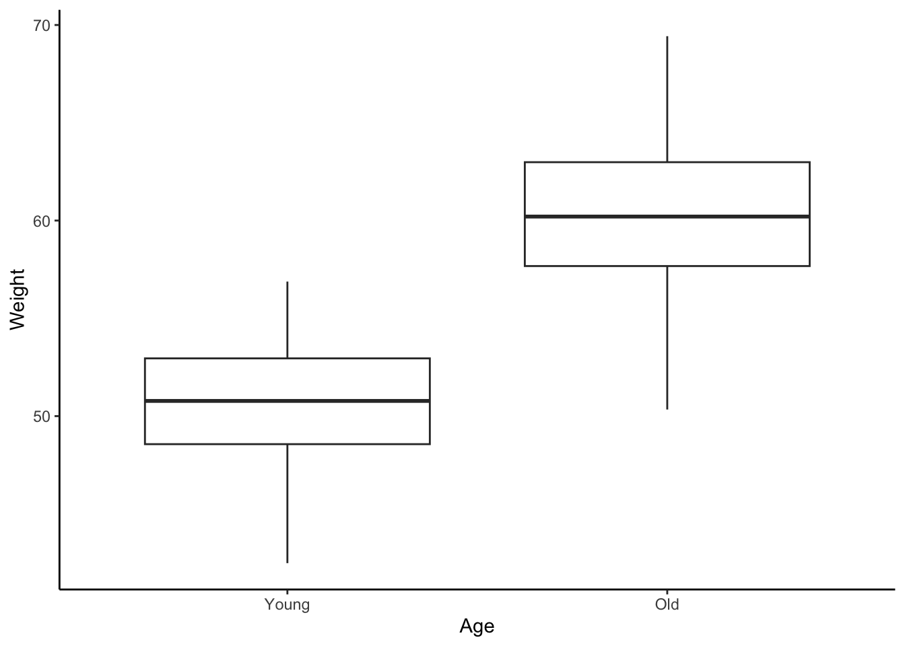
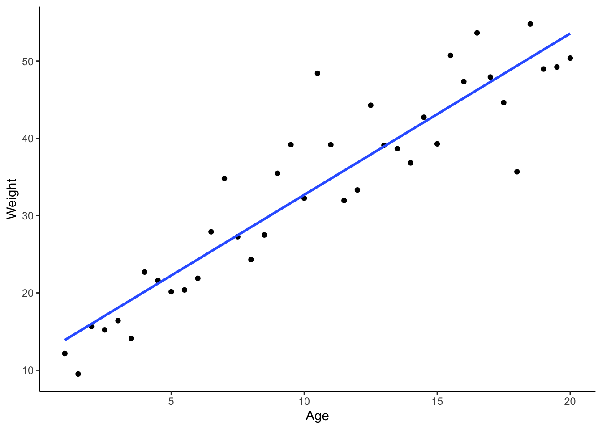

1 Week 1 – Introduction
Welcome
Welcome to the first practical of BEDA. In this practical we will introduce you to the software you will be using throughout the unit.
The only expectation for this practical is that you have attended the first lecture. If you were not able to attend, please watch the recording before you come into the laboratory!
In Module 1, all practicals begin with a workshop. The workshop is a short class that goes through a key concept. The workshop is followed by exercises that you will complete in the laboratory. The exercises are designed to help you understand the concepts covered in the lectures and gives you a chance to practice study design and data analysis.
Learning outcomes
By the end of this practical, you should be able to:
- Identify the software you will be using in this unit.
- Be able to use cheatsheets to help you with your data analysis.
- Have a basic understanding of models and how they can be used in study design.
- Be able to formulate a model with study design in mind.
- Be able to interpret plots as models.
What to submit at the end of the practical
If possible, send us some quick feedback on cheatsheets. Your feedback will help us improve the cheatsheets for future students. Otherwise no other submissions are required since this is the first practical, but think about how you would show your work to your peers and demonstrators as you work on the exercises.
Workshop
In today’s workshop we will go through:
- About us
- Introduction to R, SPSS and Jamovi
The workshop should take no more than 30 minutes (unless Januar talks too much). Workshop slides are available on Canvas.
Exercise 1 – cheatsheets
Background
In this short exercise we will introduce you to cheatsheets, which are quick reference guides that help you remember important functions and commands. Choose a cheatsheet and try to complete the task(s) within.
Try out a cheatsheet
You will need to use a web browser to access the cheatsheets. Check with your demonstrators if you are unsure how to do this. For those of you who are already reading this on the web, you can simply click here. The cheatsheets section will always be visible at the bottom of the sidebar.
- In the Cheatsheets section, you will find a list of cheatsheets. More will come soon depending on feedback and discussions on Ed.
- Choose a cheatsheet that you would like to try out – it could be something that you are not familiar with, or you could also choose one that you have some experience with to see if it aids your understanding.
- Follow the steps on the cheatsheet. If you get stuck, don’t worry! You can ask your peers or the demonstrators for help, and you may provide feedback so that it can be improved.
Tip
Now is the time to test out different software to perform the same task. This might help you decide which software you prefer to use. If you are experienced in R, you may be surprised at the ease of performing the same task in another software e.g. plots in Jamovi or SPSS.
Once you are done, please provide feedback on the cheatsheet(s) you have tried out. You can do this by submitting a comment on the form provided to you on the cheatsheets page. The form will ask you to rate the cheatsheet, and should take no more than a minute to complete, so please help us out!
Your feedback will help us improve the cheatsheets for future students.
Contribute to the cheatsheets (optional)
If you would like to take one step further and contribute to the cheatsheets, we are more than happy to accept your suggestions. You can do this in several ways:
- Email Januar with your suggestions. This is absolutely fine!
- Submit a comment on Ed. We will discuss, and update the cheatsheets accordingly.
- Submit a pull request on GitHub. This requires technical know-how, but some of you may be able to do this. You can find the link to the GitHub repository on the cheatsheet.
If your changes are accepted, you will be credited and given co-authorship of the cheatsheet. Your work will be part of the unit’s resources. You can also refer to your contribution in your CV or portfolio! For more information, please check with Januar.
Suggestions and contributions can be provided throughout the semester, so don’t worry if you don’t have time to contribute now. We will be updating the cheatsheets regularly.
Exercise 2 – introduction to models
Background
One important aspect of study design is the ability to model data. One way to do it is by using graphical plots, which essentially capture the essence of a study design in a visual form. In this exercise, we will introduce you to the concept of modeling data and get you thinking about how to use models to assist in experimental design and analysis.
What is a model?
A model is a simplified representation of a complex system. In the context of data analysis, a model is a way to represent a dataset that allows us to shape testable hypotheses or make predictions about the data. Models can be simple or complex, depending on the data and the research question.
Eventually, you will be presenting what we call an empirical model, which looks like a mathematical equation, but actually does not really require any mathematical knowledge to understand.
An example of an empirical model is this:
y = \beta_0 + \beta_1 x_1 + \epsilon
Which roughly translates to “the value of y is equal to the value of x_1 times a constant, plus some error and an initial constant.”
The above may look intimidating, but we can simplify it by thinking of it as a simple relationship, rather than an equation, therefore forming:
y \sim x_1
The above translates to “the value of y is influenced by the value of x_1”. Basically, it is a model that tells us that y changes as x_1 changes.
And so if y is weight and x_1 is age, then it is interpreted as:
\text{weight} \sim \text{age}
Which translates to “the weight of an object is influenced by its age”.
Plots as models
For now, we will focus on graphical models. These are plots, but essentially they are models since they can represent a relationship between two or more variables. Using the same example as above, we can plot the weight of a species of animal against its age and height to see if there is a relationship between them:
Interestingly, how we consider your variables can drastically change the type of plot and model used for data analysis. For example, consider the same relationship as above, but plotted differently:

Notice how both plots explain the same kind of relationship, but their interpretation and the type of model used are different. This is the essence of study design and data analysis – the model we select can drastically change the data and results we get, and planning for it is crucial to the success of your study.
Tip
If you can plot it, you are already modelling it!
Tasks
Preparation
- MS Excel or similar: to read the files.
- MS Word, Google Docs, pen and paper, or similar: to plan and visuaise your models.
- R, Jamovi, SPSS, or similar: to try out plotting your data as models.
- Data: penguins.csv and possum.xlsx, available on Canvas.
Instructions
- Step 1. Download and explore the data: penguins.csv and possum.xlsx.
-
Step 2. Identify variables from the data to formulate models. You do no need to analyse the data, neither do you need to explore it in detail. The focus is on understanding the variables and how they can be modelled. Use the variables to consider the following models:
- Histogram to show the distribution of a variable. Think: what sort of data will skew a histogram to the right?
- Scatterplot to show the relationship between two variables.
- Boxplot to compare two or more groups.
- Barplot to compare two or more groups, but with error bars. Think: consider what the error bars represent. Why would you pick a barplot over a boxplot?
- Step 3. For plots that compare two variables or more, consider how you could alter the way you collect data to use a different model. Also consider this: is the alteration logical and feasible?
- Step 4. These plots are often associated with specific empirical models and statistical analyses, which we will cover in the upcoming weeks. Can you predict what sort of statistical model you would use to analyse the data in Step 1 and Step 2? It is ok if you do not know most of the answers to this question yet. Discuss this with your peers and demonstrators.
You can either hand-draw or graphically plot the models using your software package of choice. This is a good time to try out different software!
Example
- Browse the possum data in MS Excel. Let’s consider a model of how the weight of a possum changes with age.
- Identify the variables: what type of variables are they? Are they continuous, categorical or something else? With that in mind, draw the plot(s) that you think will help you interpret the data. Weight is continuous and age is categorical, so a boxplot would be a good start.
- Different model: Age data to be collected in years, rather than categories. This would allow us to use a scatterplot to model the data. But it may not be possible to age possums as we do not know their birth dates, so this may not be feasible.
- The first model is probably a two-sample t-test, while the second model could be a linear regression.
A model that looks at the differences in weight between juvenile and adult possums could be visualised as a boxplot or barplot. Below is a boxplot of the possum data:
Code
library(readxl)
possums <- read_excel("possums.xlsx", sheet = 2)
library(ggplot2)
ggplot(possums, aes(x = Age, y = BW)) +
geom_boxplot() +
theme_classic()
Notice that in the example above, we are considering how to interpret the data, which is an important step in study design. This helps us determine the type of data we need to collect and how to analsze it. However, it’s important to note that there is only one juvenile possum in the dataset, so we would not have been able to analyse this data anyway. It also brings into question the study design – perhaps age is a random variable and not a fixed one (if we were to use it in our model), which would change the way we interpret the data. More on this in the upcoming weeks!
End of practical
That’s it for today! If you have any questions, please ask your demonstrators. They are here to help you. Remember to submit your feedback on the cheatsheets and to work on the exercises in your own time. We will see you next week for more study design and data analysis!